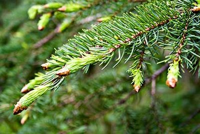

Spruce Tips
Identifying Traits
Look for the bright green new growth at the tips of spruce, fir, and pine branches. These will appear at the end of winter and the beginning of spring. As long as you are harvesting from the pine family you should be safe. There are no toxic look a likes. The tips remain edible as they mature but the taste becomes unpleasantly piney with age.
History of Use
Spruce tips are very high in vitamin C and were a favorite for preventing scurvy and treating winter colds for both native Americans and early settlers who also especially favored it as an alternative to hops for flavoring beer. The flavor is distinctly lemony but also refreshing in a way similar but not identical to mint or rosemary.
Where to Find It
If you live near any coniferous forest area at all, you should have no problem. Remember to harvest sustainably and respect conservation issues. In this case, 'when' is the more pressing concern. In most areas there will still be snow on the ground. Start looking near the beginning of March or sooner in more mild climates. If your weather is becoming reliably summer-like you may be out of time.